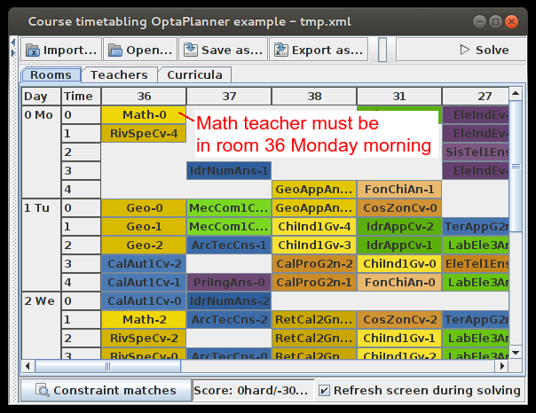
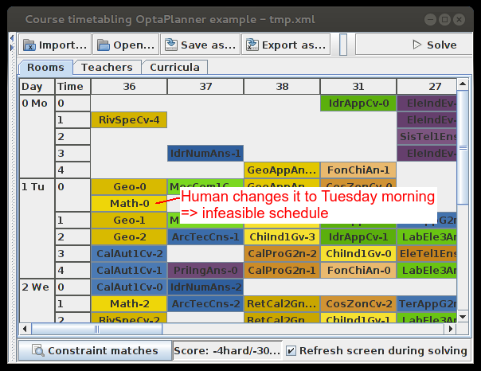
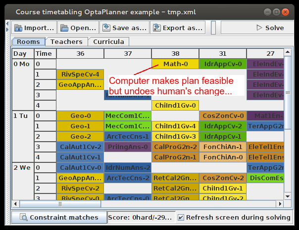
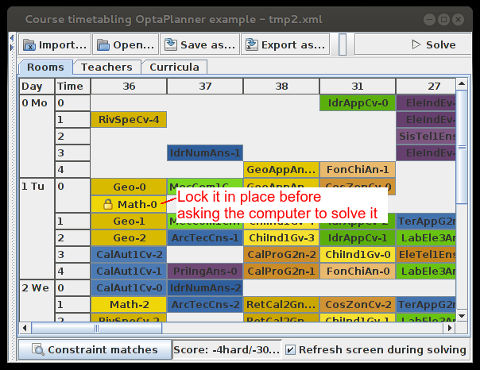
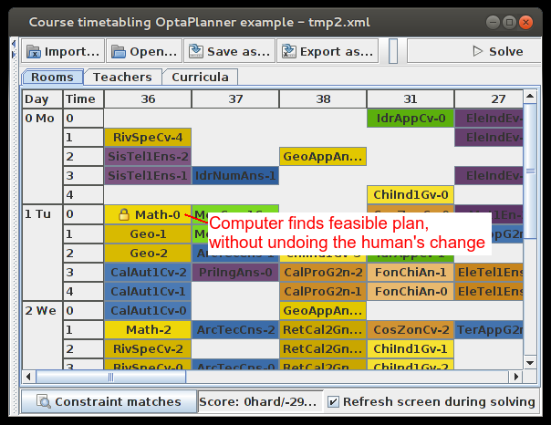

Will Skynet control our schedule if the computer optimizes it for us?
Not every organization is comfortable with letting a computer program,
such as OptaPlanner (java, open source planning engine), optimize their schedules.
Let’s take a look why – and how to remedy it – on the course scheduling example.
Course scheduling introduction
In course scheduling, we need to assign each lecture to a time and a place.
So we’re basically telling teachers and students were to be at what time.
In the example schedule below, the Math lecture will be given the Monday morning in room 36:

In the example above, OptaPlanner has come up with a feasible schedule.
This means that no room, nor any teacher, nor any student has 2 lectures at the same time.
The boss wants to do it differently
Despite that the previous schedule is optimized according to the score function (which the boss probably defined in the first place),
the boss wants to make some ad hoc changes. The Math lecture should be given on Tuesday morning instead of Monday morning:

The schedule is now infeasible because Geo and Math are now in the same room at the same time.
So we ask the computer to make it feasible…
“I’m sorry Dave, I’m afraid I can’t do that”
… and the first thing the computer does is change the Math lecture to another time and place:

The boss is unhappy because his commands are ignored. Let’s fix that.
Immovable lecture
We lock the Math lecture in place, making it immovable for OptaPlanner:

When we now solve the problem, the Math lecture isn’t moved.
We get a feasible solution which makes the boss happy too:

Video demo
If you want to see this in action, skip to the end of this video:
The human must remain in control
We regularly see this requirement in other OptaPlanner use cases too (such as employee rostering, vehicle routing and equipment scheduling).
But hopefully this article has shown that the human is indeed in control.
There’s no Skynet or HAL algorithm to disobey us… for now :)